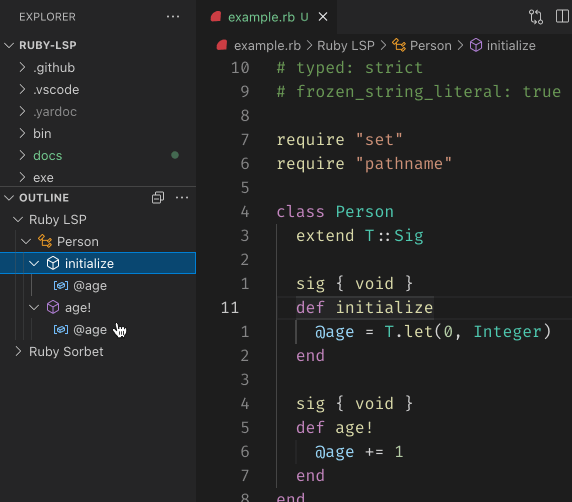

class RubyLsp::Requests::DocumentSymbol

The document symbol request informs the editor of all the important symbols, such as classes, variables, and methods, defined in a file. With this information, the editor can populate breadcrumbs, file outline and allow for fuzzy symbol searches.
In VS Code, fuzzy symbol search can be accessed by opening the command palette and inserting an @ symbol.
Example¶ ↑
class Person # --> document symbol: class attr_reader :age # --> document symbol: field def initialize @age = 0 # --> document symbol: variable end def age # --> document symbol: method end end
Constants
- ATTR_ACCESSORS
- ResponseType
- SYMBOL_KIND
Attributes
response[R]
Public Class Methods
new(emitter, message_queue)
click to toggle source
Calls superclass method
RubyLsp::Listener::new
# File lib/ruby_lsp/requests/document_symbol.rb, line 85 def initialize(emitter, message_queue) super @root = T.let(SymbolHierarchyRoot.new, SymbolHierarchyRoot) @response = T.let(@root.children, T::Array[Interface::DocumentSymbol]) @stack = T.let( [@root], T::Array[T.any(SymbolHierarchyRoot, Interface::DocumentSymbol)], ) emitter.register( self, :on_class, :after_class, :on_command, :on_const_path_field, :on_def, :after_def, :on_module, :after_module, :on_top_const_field, :on_var_field, ) end
Public Instance Methods
after_class(node)
click to toggle source
# File lib/ruby_lsp/requests/document_symbol.rb, line 121 def after_class(node) @stack.pop end
after_def(node)
click to toggle source
# File lib/ruby_lsp/requests/document_symbol.rb, line 174 def after_def(node) @stack.pop end
after_module(node)
click to toggle source
# File lib/ruby_lsp/requests/document_symbol.rb, line 189 def after_module(node) @stack.pop end
on_class(node)
click to toggle source
# File lib/ruby_lsp/requests/document_symbol.rb, line 111 def on_class(node) @stack << create_document_symbol( name: full_constant_name(node.constant), kind: :class, range_node: node, selection_range_node: node.constant, ) end
on_command(node)
click to toggle source
# File lib/ruby_lsp/requests/document_symbol.rb, line 126 def on_command(node) return unless ATTR_ACCESSORS.include?(node.message.value) node.arguments.parts.each do |argument| next unless argument.is_a?(SyntaxTree::SymbolLiteral) create_document_symbol( name: argument.value.value, kind: :field, range_node: argument, selection_range_node: argument.value, ) end end
on_const_path_field(node)
click to toggle source
# File lib/ruby_lsp/requests/document_symbol.rb, line 142 def on_const_path_field(node) create_document_symbol( name: node.constant.value, kind: :constant, range_node: node, selection_range_node: node.constant, ) end
on_def(node)
click to toggle source
# File lib/ruby_lsp/requests/document_symbol.rb, line 152 def on_def(node) target = node.target if target.is_a?(SyntaxTree::VarRef) && target.value.is_a?(SyntaxTree::Kw) && target.value.value == "self" name = "self.#{node.name.value}" kind = :method else name = node.name.value kind = name == "initialize" ? :constructor : :method end symbol = create_document_symbol( name: name, kind: kind, range_node: node, selection_range_node: node.name, ) @stack << symbol end
on_module(node)
click to toggle source
# File lib/ruby_lsp/requests/document_symbol.rb, line 179 def on_module(node) @stack << create_document_symbol( name: full_constant_name(node.constant), kind: :module, range_node: node, selection_range_node: node.constant, ) end
on_top_const_field(node)
click to toggle source
# File lib/ruby_lsp/requests/document_symbol.rb, line 194 def on_top_const_field(node) create_document_symbol( name: node.constant.value, kind: :constant, range_node: node, selection_range_node: node.constant, ) end
on_var_field(node)
click to toggle source
# File lib/ruby_lsp/requests/document_symbol.rb, line 204 def on_var_field(node) value = node.value kind = case value when SyntaxTree::Const :constant when SyntaxTree::CVar, SyntaxTree::IVar :variable else return end create_document_symbol( name: value.value, kind: kind, range_node: node, selection_range_node: value, ) end